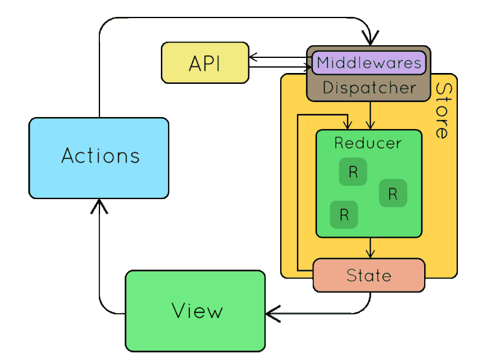

class: center, middle, inverse # TMT: Introduction To Redux ## Ryan McAfee ### 07/13/18 --- # What is Redux? * Redux is a front-end library for handling client-side application state in a centralized manner. * Deterministic state management – same state always renders same view (pure functions – functional programming). * Immutable, centralized state management for web applications/ js applications. * Created by Dan Abramov around June 2015. * Inspired by Facebook's Flux (multiple stores) and the functional programming language Elm. * Front-end framework agnostic – can be used with Angular, React, Vue Js, etc.. --- #Core Redux Concepts * Store is the object that brings them together. The store has the following responsibilities: `const store = Redux.createStore(rootReducer, initialApplicationState);` * Holds application state; * Allows access to state via getState(); * Allows state to be updated via dispatch(action); * Registers listeners via subscribe(listener); * Handles unregistering of listeners via the function returned by subscribe(listener). * Action – A js object that has a type and other optional fields. `{ type: 'ADD_TODO', id: 1, text: "Pick up milk from grocery"}` * State – A plain js object that stores your application state in the form of key -> value pairs. `{ todos: [{id: 1, text: "Pick up milk from grocery"}]}` --- #Core Redux Concepts - Continued * Reducer – A pure (no side effects) function that is responsible for updating the application state. Ties actions and state together. * Method Signature: (state, action) => newState; ``` const todos = (state = [], action) => { switch (action.type) { case 'ADD_TODO': return [ ...state, { id: action.id, text: action.text, completed: false } ] case 'TOGGLE_TODO': return state.map(todo => (todo.id === action.id) ? {...todo, completed: !todo.completed} : todo ) default: return state } } ``` --- #Three Principles * Single Source of truth * State is read-only * Only way to change the state is to dispatch (emit) an action using store.dispatch(action) which will then hit middleware and then hit the root reducer where a new application state is evaluated. * Changes are made with pure functions * Reducers are just pure functions that take the previous state and an action, and return the next state. * Should be repeatable with a unit test. Same inputs always results in same output 100% of time. --- #Redux Data Flow * Unidirectional Data Flow * Redux architecture revolves around a strict unidirectional data flow * Inspired by Flux, CQRS, and Event Sourcing  <a href="https://goo.gl/evinxZ">Source</a> --- # Why Redux? * Dan Abramov built Redux out of frustration with feature iteration time and dev experience * Not satisfied with the "status quo" * Goal: Improve Developer Experience/ Efficiency * Work smarter, not harder. * Losing application state on refresh is frustrating (lost time) * Having to refresh the page manually is frustrating (lost time) * Not being able to reproduce (replay) a user's session (front-end events) is frustrating (lost time) * Not having centralized, event driven logging is frustrating (lost time) * Goal: Create a state management library with a minimal api, but completely predicatable behavior. * Result - Redux - Makes it possible to implement (without any buy-in from the developer) * Logging * Hot Reloading * Time travel * Universal (isomorphic) apps - Works on client/ server * Record and replay --- # Redux Trade Offs * Describe application state as plain objects and arrays * Describe changes in the system as plain objects * Describe the logic for handling state updates in the form of reducer functions (reducers) which is a pure function (no side effects) * Redux introduces boiler plate code (action types, action creator, action, reducer) * Redux introduces indirection to state management (need to use action type, action and reducer to update state) vs customer.firstName = "Peter"; --- # When should I consider using Redux in my application? * You have reasonable amounts of data changing over time * You need a single source of truth for your state * You find that keeping all state in a "top-level component" is no longer sufficient * You have a very event driven application * Consult use cases --- # What can Redux help me accomplish? * Persist state to a local storage and then boot up from it, out of the box. * Pre-fill state on the server, send it to the client in HTML, and boot up from it, out of the box. * Serialize user actions and attach them, together with a state snapshot, to automated bug reports, so that the product developers can replay them to reproduce the errors. * Pass action objects over the network to implement collaborative environments without dramatic changes to how the code is written (custom realtime redux middleware). * Maintain an undo history or implement optimistic mutations without dramatic changes to how the code is written. * Travel between the state history in development, and re-evaluate the current state from the action history when the code changes, a la TDD. * Provide full inspection and control capabilities to the development tooling so that product developers can build custom tools for their apps. * Provide alternative UIs while reusing most of the business logic. --- #Todo App Example * <img src="assets/TodoApp.gif" alt="TodoApp" width="auto" height="500"> --- #Tesla - Range Per Charge Example * [Redux Demonstration](http://redux-tesla-charge-calculator.surge.sh/) --- #Additional Reading/ Resources * https://redux.js.org/ * https://code-cartoons.com/a-cartoon-intro-to-redux-3afb775501a6 * https://code-cartoons.com/hot-reloading-and-time-travel-debugging-what-are-they-3c8ed2812f35 * https://medium.freecodecamp.org/building-teslas-battery-range-calculator-with-react-part-2-redux-version-2ffe29018eec * https://egghead.io/courses/getting-started-with-redux * https://dev.to/hemanth/explain-redux-like-im-five * https://blog.angular-university.io/angular-2-redux-ngrx-rxjs/ * https://medium.com/@dan_abramov/you-might-not-need-redux-be46360cf367 * https://blog.logrocket.com/logrocket-a-new-type-of-developer-tool-321a3e3d7af7